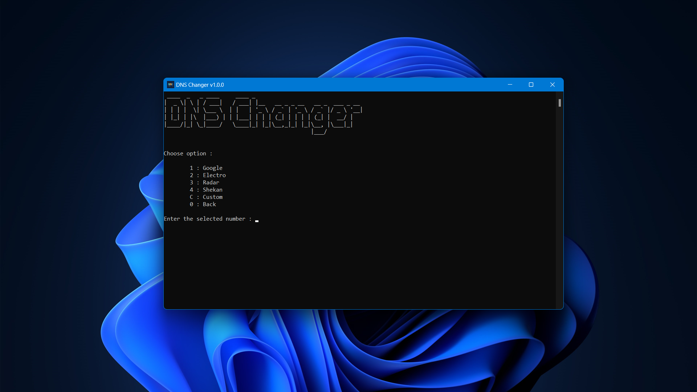

DNS Changer: Easily change your DNS server settings on Windows
Improve your internet speed, security, and privacy with DNS Changer.

Why use DNS Changer?
DNS Changer can help you
Improve your internet speed
Improve your internet security
Improve your internet privacy
Block ads and malware
DNS Changer is easy to use
Download, install, and change your DNS server settings in minutes
Click on the Start button and type "Control Panel," then open it.
Go to "Network and Sharing Center."
Click on "Change adapter settings" on the left sidebar.
Right-click on your active network connection and select "Properties."
Choose "Internet Protocol Version 4 (TCP/IPv4)" and click "Properties."
Select "Use the following DNS server addresses" and enter your preferred DNS server addresses.
Click "OK" to save your changes.
Click on the network icon in your system tray or top panel (usually looks like Wi-Fi signal bars or a network icon).
Select your active network connection (Wi-Fi or Ethernet) and right-click on it.
Choose "Edit Connections" or "Connection Information" (the wording may vary depending on your Linux distribution).
In the Network Connections window, select your active connection and click the "Edit" button.
In the connection settings window, navigate to the "IPv4 Settings" or "IPv6 Settings" tab, depending on which DNS settings you want to change.
In the "DNS Servers" field, enter the IP addresses of your preferred DNS servers, separating multiple addresses with a comma (e.g., 8.8.8.8, 8.8.4.4 for Google DNS).
Click "Save" to apply the changes.
You may need to disconnect and reconnect to your network for the new DNS settings to take effect.
Click the Apple menu and go to "System Preferences."
Select "Network."
Choose your active network connection (Wi-Fi or Ethernet) on the left.
Click "Advanced" in the lower right.
Go to the "DNS" tab.
Add DNS server addresses using the "+” button.
Drag your preferred DNS servers to the top of the list.
Click "OK" and then "Apply."
Open the Settings app.
Scroll down and tap "Wi-Fi."
Tap the network you're connected to.
Scroll down and tap "Configure DNS."
Choose "Manual."
Tap "Add Server" and enter the DNS server addresses.
Tap "Save" and then "Back" to save your settings.
Open the Settings app.
Tap on "Network & Internet" or similar, depending on your Android version.
Tap on "Wi-Fi" or the active network connection.
Tap on "Advanced" or "Network preferences."
Tap on "Private DNS" or "IP settings."
Select "Static" or "Enter manually" and enter the DNS server addresses.